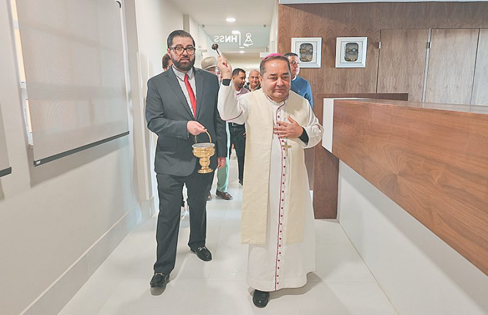

Noticia principal · Acontecer diocesano
Atención digna, segura y humana: el Hospital de Nuestra Señora de la Salud estrena cinco habitaciones
El HNSS amplió su capacidad de hospitalización con la inauguración y bendición de cinco nuevas habitaciones en el tercer piso. El Arzobispo recordó que la renovación no busca rentabilidad, sino mejores servicios para quienes más lo necesitan.
Por Alberto Calderón Ramírez · Edición del 11 de octubre de 2026 · Págs. 12 y 13